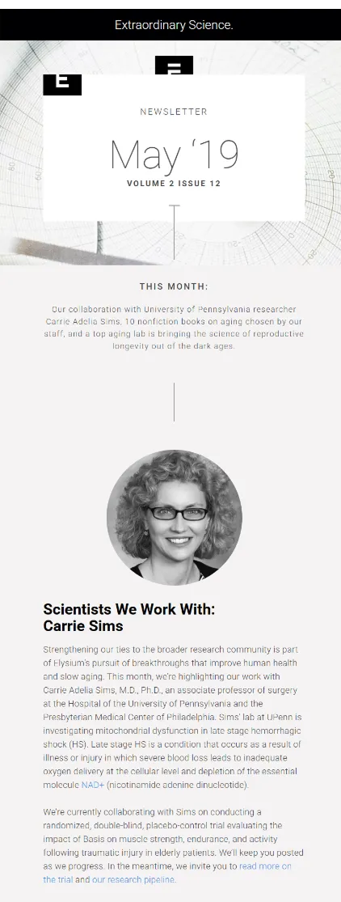
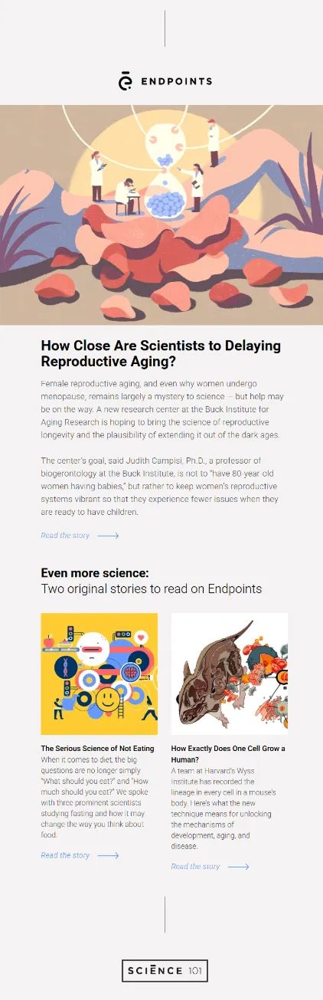
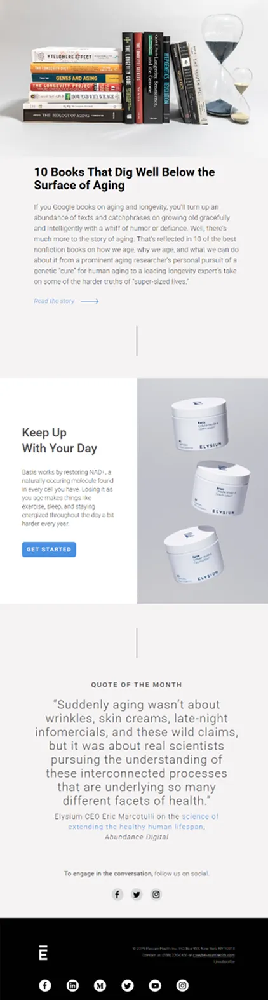

How can an email feel both elegant and educational?
In this episode of Feedback Friday, Matthew Smith and Matt Helbig analyze Elysium’s newsletter to uncover how strong design choices and smart storytelling build trust and curiosity. They explore how typography, layout, and curated content can transform a brand email into something readers actually look forward to.
TL;DR
- Using design to communicate credibility and brand personality
- Why clean typography makes complex content easier to read
- Balancing education, inspiration, and subtle product promotion
- What long-form newsletters can teach us about reader engagement
Matthew Smith: Hey, Matt Helbig. Happy Friday.
Matt Helbig: Friday, Matthew Smith. How’s it going, dude?
Matthew Smith: It’s going well. Sunshine here in Greenville, South Carolina. Well, I wanted to show you an email from the Elysium group today. I don’t recall how I initially got on their list, but I’ve been impressed with their dedication to maintaining brand consistency in their emails. That takes a lot of work and shows a certain attitude or commitment to the craft.
So let’s check them out. I’m pretty impressed with the way these folks have been working, and I thought I’d walk you through it today. This is one of their newsletters. There are more Elysium emails on the Really Good Emails site. This one’s from May 19. They present the date and time upfront.

Matt Helbig: Do you like that, or would you rather they lead with a title?
Matthew Smith: I was thinking about that. I feel like the date is probably less useful for the reader than a strong title. That said, different audiences respond differently, so you’d want to test it. For me, that section of an email should communicate what’s below — what’s happening, what it’s about — and this one doesn’t really do that. Now, we’re not seeing the subject line or preheader in this video, so maybe they reference it meaningfully there. But yes, I think a title would be more helpful. Overall, though, I really like the layout. They lead with imagery that feels scientific and interesting. The typography is outstanding — clean, simple, yet elegant — which perfectly suits their brand.

As we move down, they begin with centered copy, featuring simple language and a clear focus. Then they switch to left-aligned text, and they have enough space between sections to make that work. It can be tricky to transition from a centered image to left-aligned copy, so be aware of this when creating emails. On mobile, it works better because the column feels cohesive, but on desktop, your eye moves from center to left, which can feel a bit unbalanced. Still, it works fairly well here. They also include this vertical line running down the center of the email — a nice design choice that creates a sense of a visual timeline. The illustrations have great texture and draw you in. You can read enough of each article to get hooked, and then click to learn more. If that last article is the featured one, it’s nice how they follow it with two additional thumbnail-style stories. In the mobile version, the text is slightly different, but the imagery stays large, which keeps the experience engaging.
I like their CTA — “Read the Story” — and how it leads you into the content. I can also go dig into Science 101 if I want to read more about that. Then they do something fantastic: they curate a list of ten books. That’s such a smart way to provide content that’s not their own but is interesting and relevant to their audience. Finally, they move into their products. They lead with intelligence, curiosity, and educational content before the product section — a fascinating way to structure a newsletter. All of this is live text, which is great. I’m really impressed and encouraged by that. They conclude with a “Quote of the Month,” which is another fantastic content idea. It doesn’t have to be from your CEO — though in this case it is — but could come from anywhere.

Someone who subscribes to this email is seeking reliable information to enhance their scientific understanding, while also gaining access to products if they’re an Elysium customer or prospect. I think that’s really smart. The footer is extremely simple, featuring only the essentials and social links. It’s a little odd that they double up on components — it seems like they’re repeating one. If it were me, I’d make that section feel different and move it higher up so the repetition isn’t back-to-back. Overall, they’ve done such a great job with typography — the foundation of good design — and I think they’ve nailed it. It’s a longer-form newsletter, but it works. I’m curious what you think.
Matt Matthew Smithg: Yeah, that vertical line running through the whole email really elevates the template. Outside of the typography, it’s a pretty basic newsletter concept, but this version feels made for mobile consumption. I almost prefer the mobile experience. For some reason, on the desktop, the contrast feels lower and a bit harder to read.
Matthew Smith: I think that’s because of the text weight. It appears they’re using a light or book weight, which can be difficult to read unless the text is large. It creates a little “buzzing” effect in your eyes. On mobile, the text is slightly bigger, which helps. If it were me, I’d consider switching from the lightweight to a regular weight for readability. I know that can be a tough brand decision, but readability should always win.
Matthew Smithg: Even in this section, I like how they break up the paragraphs. If it were one big block of text, I wouldn’t want to read it. Adding those small spacers between paragraphs makes it much more digestible. Everything looks great overall. If anything, they could add some progressive enhancements — such as hover effects on links or buttons — so it’s clear what’s clickable. The “Read the Story” text is a bit light, so a rollover or opacity change could help enhance its visibility.
Matthew Smith: For sure. I really like this upsell module too. Back when I worked in prospect email marketing, people always wanted newsletters like this — informative content first, followed by an upsell. That format converts well because you’ve already provided value before introducing a product. More newsletters could take this approach: stay on brand, feature interviews or related articles, and then include a gentle upsell. It’s a smooth flow — content first, product later.
Matthew Smithg: Right, and finishing with that quote keeps it from feeling like you’re just being sold to.
Matthew Smith: Exactly. These content modules are suitable for almost any business, particularly e-commerce. The reason someone “hires” this email with their time is that they get real value from it — insights, ideas, and useful information. For example, I can learn about Dr. Carrie Sims and her work on anti-aging, read related articles, explore curated book recommendations, and then see a relevant product. That’s a healthy structure for growing and serving your audience. So, great email all around. Just a few small improvements that could make it even better — but isn’t that true for all of us? Good job, Elysium. Thanks for getting in touch and sending this our way. Have a fantastic weekend. See you, email geeks out there.
Thanks for showing up. Have a good one.